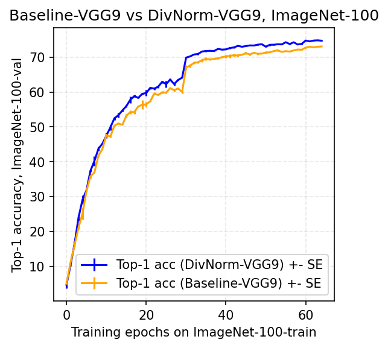
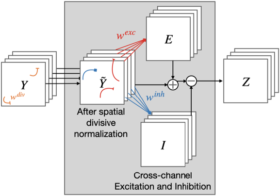

rraina@ucsd.edu
I am a senior at UC San Diego pursuing a Bachelor of Science in cognitive science, specializing in machine learning and neural computation.
At UCSD, I am a research assistant at the de Sa Lab where I'm working on computer vision preception as well as representational learning.
Last Summer, I joined MIT Computer Science & Artificial Intelligence Lab as a visiting student where I worked on federated learning capabilities in autonomous driving.
Previously, I worked at IBM in collaboration with UCSD as a researcher in their Artificial Intelligence for Healthy Living (AIHL) program.
- Paper accepted at SVRHM 2021 Workshop @ NeurIPS.
- Joined the Decentralized Information Group (DIG) as a Visiting Researcher where I'll be working on federated learning approaches to computer vision.
- Invited as a guest speaker to Barts and The London School of Medicine and Dentistry to talk about medical artificial intelligence.
- Joined the de Sa Lab as a Research Assistant in collaboration with Sony working on computer vision perception
- Honored to be an Undergraduate Researcher - Machine Learning at IBM in collaboration with UC San Diego
- Joined as a Tech Fellow (iOS) at CodePath where I taught iOS app development
- Accepted as a Research Intern at Star Capital working with Dr. Fei Tony Liu
- Started my B.S in Cognitive Science: Machine Learning and Neural Computation at UC San Diego, CA
My research interests lie in deep learning, computer vision, and optimization.
|


|
Vijay Veerabadran, Ritik Raina, Virginia R. de Sa, SVRHM 2021 Workshop @ NeurIPS paper / bibtex DivNormEI, a novel bio-inspired convolutional network that performs divisive normalization, a canonical cortical computation, along with lateral inhibition and excitation that is tailored for integration into modern ANNs. |
Visiting Student
Cambridge, MA • Summer 2021 - Present
· Working at the MIT Computer Science & Artificial Intelligence Laboratory with Dr. Lalana Kagal and
Vaikkunth Mugunthan on federated learning capabilities with autonomous driving vehicles.
· Leveraging the use of blockchain to localize and track surrounding objects from RADAR/LIDAR/camera sensor data.
· Researching to find our whether the use of mutli-task learning via multiple model connections would improve the current SOTA accuracy on autonomous driving.

Research Assistant - Deep Learning
San Diego, CA • Winter 2021 - Present
· Furthering the development novel bio-inspired architectures (with recurrent within-layer and feedback connections) for robust self-supervised learning from natural videos. This research is supported by the Sony Research Award.
· Proposed to use the concept of object centric representation for the task of image classification/segmentation. To achieve this, we proposed having a bottleneck in the model with both object and context centric representations. This research is supported by Google Research.

Undergraduate Researcher - Machine Learning
San Diego, CA • Summer 2020 - Spring 2021
· Worked with the Artificial Intelligence for Healthy Living (AIHL) team to make microbial ontology classification scale efficiently.
· Designed scalable ETL pipeline using AWS S3, and Lambda function to pre-process 300k+ microbe samples into feature representations.
· Implementing a hybrid model infrastructure consisting of both Gradient Boosting and LSTM models.
· Tuned the Bayesian-optimized BiLSTM regression model using Keras Tuner with a test accuracy of 99.6% against BERT model which gave 79% accuracy.
· Evaluated strategies to optimize memory and GPU utilization while deploying models at scale.
· A patent was filed for the project design.
· Academic Mentor: Yoshiki Vasquez Baeza
· Industry Mentors: Niina Haiminen (IBM T. J. Watson Research Center), Laxmi Parida
(Computational Genomics Group), Ho-Cheol Kim (Almaden Research Center)
Co-Founder
Melbourne, Australia • Fall 2020 - Present
· Implemented an ensamble of reinforcement learning algorithms which would be used under quantitative trading, portfolio management, and asset management.
· Currently optimizing policy gradients and evaluating stock market strategies under RL algorithms (PPO, DDPG, HER, ACER, A2C).
Tech Fellow (iOS)
San Diego, CA • Winter 2020 - Spring 2020
· Increased the largest pipeline of high-performing underrepresented engineers in tech via Codepath, a nonprofit that has raised $1 million from Facebook and is bringing industry level courses to 23+ universities.
· As an instructor, I was required to maintain a high-level of understanding of the curriculum topics including but not limited to: Frameworks (i.e. WebKit, MapKit, ARKit, AVFoundation, Vision), iOS Libraries (AlamoFire, AlamoFireImage, MBProgressHUD, SwiftyJSON), Back-end (FireBase and Parse), TableViews and Passing Data, APIs (Twitter API, Parse API, Movies API), AutoLayout (constraints), CocoaPods.
· Additionally, I design, develop, and provide my own in-class material to enhance the learning process of iOS to 45+ committed students.

Research Intern
Jakarta, Indonesia • Summer 2019
· Worked with the Data Science team to research and develop a deep learning based system for long-term face tracking from propitiatory databases.
· Applied a Cascade-CNN model with the utilization of a VGG16 network for face detection/verification.
· Deployed further improvements such as applying a multi-patch tracking for tracking faces in consequent frames.
· Developed a QT desktop application to utilize my model and further populate the facial database.
Barts and The London School of Medicine and Dentistry
Spring 2021
· I gave an introductory talk on microbiome analysis and the use-cases of machine learning algorithms in bioinformatic applications.
Open-source, group projects I worked on for courses, at hackathons, or by myself.
![](%0A)
March 2020 • Data Visualization / Analysis / Python • COGS 108 Final Project
Languages/Tools Used: Python (Pandas, NumPy, Matplotlib, Patsy), Jupyter Notebooks
Our project saught to draw a relationship between giving women benefits such as maternity leaves and their participation in the workforce as a way to mobilize companies to allow women to balance their personal and professional lives. Too often, women are forced to choose between their career and their families and research has shown that pregnancy and the time right after giving birth play a crucial role in determining whether a woman will return to the workforce. We believe that allowing women reasonable length maternity leaves will allow them to spend the critical time with their families that they need so that they can return to work after feeling happy and healthy.
November 2019 • Image recognition / Neural networks / Machine learning
Languages/Tools Used: Python, NumPy, iMutils, OpenCV, COCO
Designed and implemented a Mask R-CNN model (from He et. al. 2017) which was able to extract local image descriptors and generate a spatial feature map, a fully convolution classification and an up-sampling network.
Summer 2019 • Facial Recognition • Machine Learning • dlib
Languages/Tools Used: Python, dlib, iMutils, OpenCV, Scipy
This is a Python script which utilizes a dlib 81-point face landmark dataset to facially landmark 81 locations of a face.
The dlib library is used to first detect the faces and the dat file is used for the landmarks. An extra touch to the script was the use of
counting how many blinks were made. This was done via the Ear-Aspect-Ratio(EAR) which makes use of the 6 coordinates surrounding the eyes.
Fall 2019 • MERN Stack • HTML / CSS / JavaScript
Languages/Tools Used: MongoDB, Express, HTML/CSS/JavaScript, React, Node.js
Built a reactive web application using MERN stack for querying banking transactions uploaded to a MongoDB collection.
Built to explore the various features of MongoDB Atlas.
December 2019 • OpenGL • C++
Languages/Tools Used: C++, OpenGL
A C++ 2D clone application of the classic game, Snake. Keyboard clicks help the user navigate across the board. As the snake intakes food, its speed FPS increases. Created the 2D environment by using texture mapping
November 2019 • iOS (Swift) / Parse / Alamofire
Languages/Tools Used: Swift, Parse, Alamofire, UIKit
An Instagram-style social media application where users can create accounts to upload and share pictures. The application utilizes a custom Parse backend to securely store users and passwords.
November 2019 • iOS (Swift) / Parse / Alamofire / RESTful API
Languages/Tools Used: Swift, Twitter API, BDBOAuth1Manager, UIKit, AFNetworking
Tweet4Me is a Twitter-based client app that allows users to log in and view their feed. This is done by using Twitter's RESTful API. Likewise, the users can like, retweet, and refresh their live feed.

President
VP of Data Analytics
- COGS 190 - Special Project (Mattar Lab)
- COGS 118AB - Machine Learning I & II
- COGS 188 - Artificial Intelligence Algorithms
- COGS 108 - Data Science in Practice
- COGS 109 - Modeling and Data Analysis
- COGS 107AB - Neuroscience I & II
- COGS 101C - Language
- COGS 17 - Neurobiology in Cognition
- COGS 14B - Statistical Methods
- COGS 14A - Research Methods
- COGS 13 - Field Methods
- MATH 180A - Probability
- MATH 20CE - Multivariable & Vector Calculus
- MATH 20AB - Calculus I & II
- MATH 18 - Linear Algebra
- CSE 258 - Web Mining & Recommender Systems (Graduate)
- CSE 152A - Computer Vision I
- CSE 101 - Design and Analysis of Algorithms
- CSE 100 - Advanced Data Structures
- CSE 30 - Computer Organization and Systems Programming
- CSE 21 - Mathematics for Algorithms and Systems Analysis
- CSE 20 - Discrete Mathematics
- CSE 15L - Software Tools & Techniques
- CSE 12 - Data Structures & OOP Design
- CSE 8AB - Object-Oriented Programming
Website sourced from here.